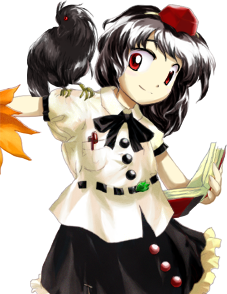

Aya é frequentemente vista como:
Obstinada – faz de tudo para conseguir um furo de reportagem exclusivo.
Polida, mas cínica – mantém uma postura formal e educada, mas adora manipular fatos.
Orgulhosa – tem extrema confiança em sua velocidade e na soberania dos Tengu.
Ela transmite a sensação de uma jornalista profissional que, por trás do sorriso, está calculando o próximo escândalo.
🧠 Mente perspicaz (e oportunista)
Aya é extremamente inteligente e observadora:
Nota detalhes que os outros ignoram
Sabe exatamente como provocar reações nas pessoas
Distorce a realidade para deixar as notícias mais atraentes
Apesar do tom sensacionalista, ela possui um vasto conhecimento sobre Gensokyo.
🎭 Comportamento calculista
Ela demonstra traços típicos de uma repórter ambiciosa:
Incomoda os outros com perguntas invasivas
Evita confrontos diretos desnecessários, preferindo observar
Fica radiante quando encontra um boato suculento
Seu amor pelo jornalismo dita o ritmo de todas as suas ações.
🌿 Vida na Montanha Youkai
Aya vive e trabalha na sociedade dos Tengu:
Segue a hierarquia da Montanha, embora goste de quebrar regras
Viaja por toda Gensokyo em busca de notícias
Defende seu território quando a segurança da montanha é ameaçada
Ela prefere estar no vento e ao ar livre, onde sua mobilidade é absoluta.
Relação com os outros
Aya interage com quase todos os habitantes de Gensokyo:
Entrevista humanos e youkais, muitas vezes sem permissão
É vista com desconfiança por exagerar nos fatos
Mantém uma rivalidade amigável (ou irritante) com outras mídias locais
Apesar de sua fama de fofoqueira, ela busca manter o equilíbrio e o registro da história.
Jornalista e Repórter
Aya é a fundadora, escritora e distribuidora do jornal Bunbunmaru, dedicando seu tempo a investigar incidentes e rotinas de Gensokyo.
Corvo Tengu
Como membro de sua espécie, ela também cumpre deveres de patrulha e mantém a ordem na Montanha Youkai quando necessário.
Manipulação do vento
O principal poder de Aya é controlar as correntes de ar:
Pode gerar tufões e rajadas violentas com seu leque (Hauchiwa)
Usa o vento para repelir ataques e projéteis inimigos
Consegue ouvir segredos carregados pela brisa
Esse poder a torna uma força da natureza imbatível em céus abertos.
Velocidade extrema
Ela é reconhecida como um dos seres mais rápidos de Gensokyo, sendo capaz de cruzar o céu num piscar de olhos.
Voo
Como uma Tengu alada, Aya voa com maestria incomparável, realizando manobras evasivas perfeitas durante as batalhas.
Fotografia de Combate
Ela consegue usar sua câmera fotográfica não apenas para registrar provas, mas também para "limpar" e neutralizar projéteis (danmaku) inimigos com o flash.
Mesmo quando não quer lutar, sua velocidade absurda e controle do vento fazem dela uma oponente virtualmente intocável.

Espécie: Crow Tengu (um yōkai corvo do folclore japonês)
Título: Humble Tengu Reporter (Repórter Tengu Humilde)